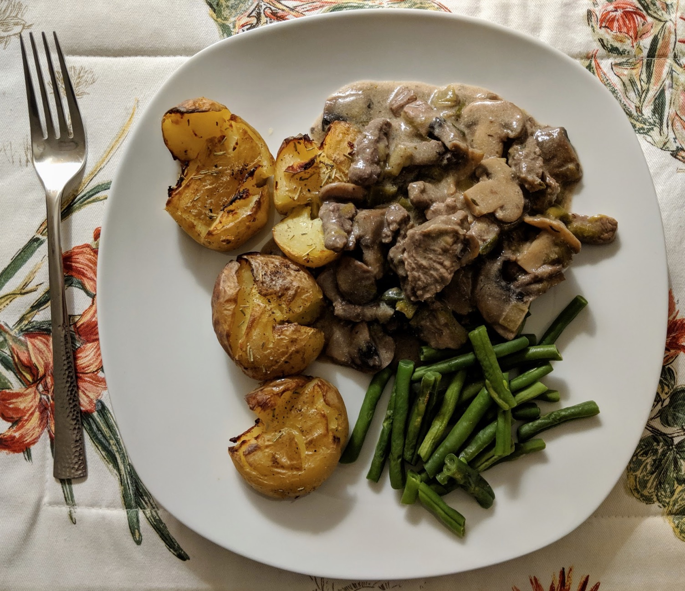

Ingredients
- Olive oil
- 450g sirloin steak, cut across the grain into strips
- 1 onion, diced
- 450g mushrooms, sliced
- 2 cloves garlic, minced
- 2 Tbsp butter
- 2 Tbsp plain flour
- 1 ½ cups beef broth
- 5ml dried thyme, or 5 sprigs fresh thyme
- 1 Tbsp Dijon or grain mustard
- ½ cup Greek yoghurt
- 1 mug of rice
- Choice veggies (like fresh French beans you've grown yourself and are quite proud of)
Instructions
- Heat olive oil in large saucepan; add meat and some salt and pepper.
- Allow to brown for approximately 1 minute and remove from pan.
- Reduce heat to medium; add onion and allow to soften for 2-3 minutes, then add garlic and
mushrooms.
- Cook until all vegetables are soft and remove from pan.
- Add butter and allow to melt, then sprinkle flour over, mix and cook for 1 minute.
- Add beef broth, stir and cook for 2 minutes to allow sauce to thicken.
- Add thyme, mustard and yoghurt and mix, then return meat and vegetables to the pan.
- Stir and allow to cook at low heat for 10 minutes.
- Serve with rice (or potatoes) and vegetables of choice.
Serves 5.
Inspired by this recipe.